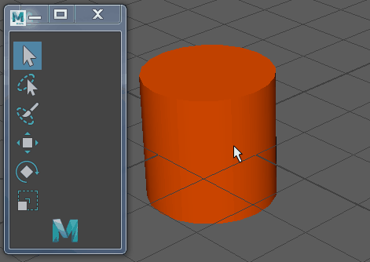

当您在对象模式或者组件模式下建模时，自定义枢轴编辑模式允许您调整枢轴的位置和轴方向。（请参见选择模式。）
激活自定义枢轴编辑模式
- 选择网格上的对象或组件。
- 选择变换工具。
- 执行下列操作之一：
- 按住 D 键以临时进入自定义枢轴编辑模式。
- 按 D 键或 Insert 键。
- 单击“工具设置”(Tool Settings)中的“编辑枢轴”(Edit Pivot)。
将显示自定义枢轴操纵器（组合了平移和旋转操纵器）。如果您正在组件模式下建模，多组件选择模式将激活。
- 调整枢轴位置和轴方向。

退出自定义枢轴编辑模式
- 执行下列操作之一：
- 释放 D 键。
- 按 D 键或 Insert 键。
- 单击“工具设置”(Tool Settings)中的“编辑枢轴”(Edit Pivot)。
- 选择其他变换工具。
注： 切换工具时，会保留自定义枢轴。